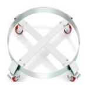
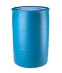
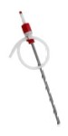
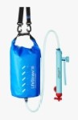
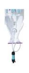
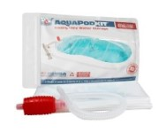

Materials
Instructions
For official government instructions, click here.
If you have limited storage space, click here.

Step 1:
- This part is optional.
- Assemble the part with its included instructions.
- Consider placing the 2 lockable wheels next to eachother.
- It allows you to move the 500lb drum of water when full.
- It has 2 lockable wheels to restrict movement of drum.

Step 2:
- Open the drum with the bung wrench and fill it with clean, lightly-soapy water.
- Close the drum, roll it, swish it, and tilt it to wash all surfaces (x2).
- Empty the drum.
Step 3:
- Prepare a solution of 4 tsp bleach to 1 gal water.
- Fill the drum with the bleach/water solution.
- Close the drum, roll it, swish it, and tilt it to sanitize all surfaces.
- Empty the drum.
Step 4:
- Place the dolly where you wish to store the drum.
- Lock the wheels on the dolly.
- Place the empty, sanitized drum centered on the dolly.
- Fill the drum with clean, fresh water using the drinking hose.

Step 5:
- For harvesting stored water.
- Assemble the pump.
- Open the barrel.
- Insert and fasten the pump into the barrel.
- Pump the water into a clean container.
- Stir the water to aerate it and improve taste.

Step 6:
- Note the date when drum was filled.
- Recommended: Repeat these steps every 6 months, however fully sanitized clean water stored in cool dry place may be safe indefinitely.
Getting Clean Water

Lifestraw
- This requires no heat source.
- Portable and reusable.
- Pore size: 0.02 micron.
- Lasts up to 4,755 gal | 18,000 L.
- Max Flow Rate: 3.1 gal/hr | 12 L/hr.

Puribag
- This requires no heat source.
- Very compact and portable.
- Up to 2.6 gal | 10 L of water capacity.
- Process takes 30 mins.
Distiller
- This requires a heat source.
- Durable and indefinite reusability.
- 1.75 gal | 7 qt water distilling capacity.

Aquapod Kit
- Emergency water storage for bathtub.
- Stores clean tap water.
- Can be used when an emergency is expected.
- Up to 100 gal capacity.